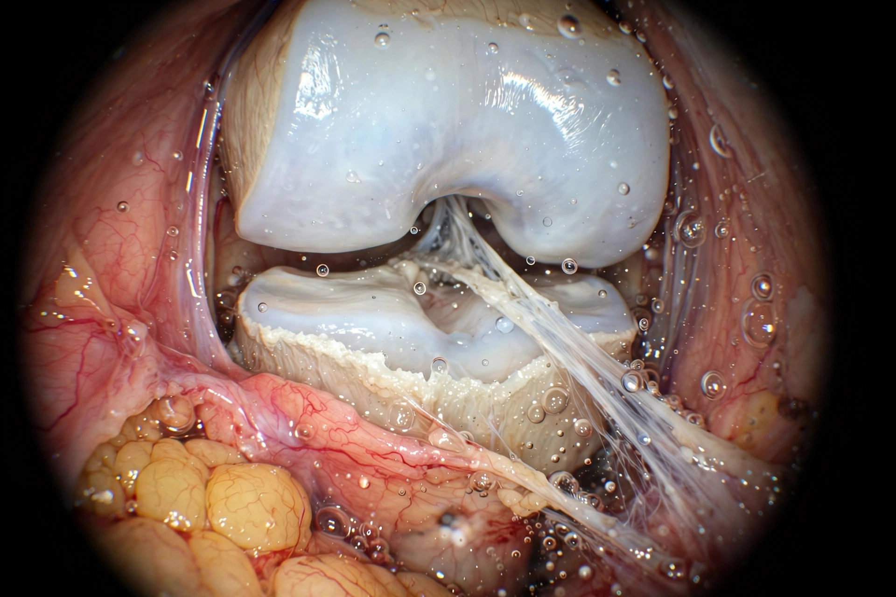

Arthroscopy
Arthroscopy (also called arthroscopic surgery) is a minimally invasive surgical procedure on a joint in which an examination and sometimes treatment of damage is performed using an arthroscope — a narrow endoscope with a camera — inserted through a small incision. It is most commonly performed on the knee and shoulder, but also on the hip, ankle, elbow, wrist and the joints of the arm.

| Specialty | Orthopaedic surgery |
|---|---|
| Common sites | Knee, shoulder, hip, ankle |
| Uses | Meniscal repair, ACL reconstruction, cartilage debridement, synovectomy |
| Incisions | Usually two or three small "portal" incisions |
Procedure
The joint is distended with sterile fluid, and the arthroscope is introduced through a small portal incision. Working instruments enter through additional portals, and the surgeon operates while viewing a monitor. Compared with open surgery, arthroscopy usually means less pain, smaller scars and faster recovery, and is often done as day-case surgery.
Indications
Knee arthroscopy is used to trim or repair torn menisci, reconstruct the anterior cruciate ligament, and remove loose bodies; shoulder arthroscopy treats rotator cuff tears and instability. In inflammatory arthritis, arthroscopic synovectomy may remove diseased synovium. Evidence reviews have questioned the benefit of arthroscopic debridement for uncomplicated knee osteoarthritis.
Risks
Complications are uncommon but include infection, bleeding, blood clots, stiffness and damage to nerves or cartilage.
History
Japanese surgeon Masaki Watanabe is credited with developing the modern arthroscope and performing early arthroscopic meniscectomies in the mid-twentieth century; the technique spread widely from the 1970s.